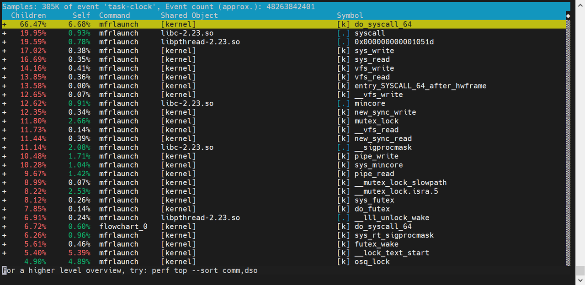

Perf Linux使用教程
perf 是 Linux 内核提供的一个强大的性能分析工具，基于 硬件性能计数器（Performance Monitoring Counters, PMC） 和 内核事件采样 来监控系统性能。
基本原理
Linux性能计数器是一个基于内核的子系统，它提供一个性能分析框架，比如硬件**（CPU、PMU（Performance Monitoring Unit））功能和软件（软件计数器、tracepoint）**功能。通过perf，应用程序可以利用PMU、tracepoint和内核中的计数器来进行性能统计。
- 现代 CPU（如 Intel、AMD、ARM）都内置了 性能监控单元（PMU, Performance Monitoring Unit），可以统计各种硬件事件：CPU 周期数（cycles），指令数（instructions），缓存命中/失效（cache-misses, cache-references），分支预测失败（branch-misses），分支预测失败（branch-misses），
perf通过 PMU 读取这些计数器，计算 CPI（Cycles Per Instruction）、缓存命中率 等指标，帮助分析程序瓶颈。 - 除了硬件事件，
perf还可以监控 内核/用户态软件事件：CPU 调度事件（context-switches, migrations），缺页异常（page-faults），系统调用（syscalls），块设备 I/O（block:block_rq_issue，这些数据可以帮忙分析系统调用开销、调度延迟、I/O瓶颈等问题。 perf支持动态探针（Dynamic Probes），类似于ftrace和eBPF：kprobes：动态追踪内核函数，uprobes：动态追踪用户态函数，tracepoints：静态内核跟踪点（如sched:sched_switch）。
每隔一个固定时间，CPU上产生一个中断，Perf监控当前是哪个进程、哪个函数，然后给对应的进程和函数加一个统计值，这样就知道CPU有多少时间在某个进程或某个函数上。

安装
1.云端
1 | |
Google浏览器访问上述链接，通过导入.json记录文件，生成性能火焰图

2. 本地
- 运行
perf –version查看当前需要安装哪些库文件
1 | |
- 安装相应库文件 重新运行 perf –version 能够输出对应的版本信息
1 | |
使用
1.实时分析
1 | |
只能实时查看目前为止占用cpu较高的进程，不便于事后分析
-e：指定性能事件
-a：显示在所有CPU上的性能统计信息
-C：显示在指定CPU上的性能统计信息
-p：指定进程PID
-t：指定线程TID
-s：指定待解析的符号信息
-g: 记录函数的调用关系
执行下面命令
1 | |
-e task-clock |
监控 任务时钟（Task Clock） 事件，表示进程占用 CPU 的时间（单位：毫秒）。 |
|---|---|
-g |
记录 调用栈（Call Graph），便于分析函数调用关系。 |
-p 21437 |
仅监控 进程 ID 为 21437 的进程。 |
-s comm,dso,symbol |
显示字段： - comm：进程名。 - dso：动态共享对象（如 libc.so、可执行文件）。 - symbol：函数符号名（如 malloc、main） |

执行下面命令监控所有进程
1 | |

2.生成数据文件后离线分析
1 | |
perf record用于 采集性能数据并保存到文件（默认生成 perf.data），便于后续离线分析（如 perf report、生成火焰图等
1 | |
| 选项 | 作用 |
|---|---|
-e <事件> |
指定监控的事件（如 cycles, cache-misses, task-clock）。 |
-p <PID> |
监控指定进程（通过进程 ID）。 |
-F <频率> |
采样频率（Hz，如 -F 99 表示每秒采样 99 次）。 |
-g |
记录调用栈（用于生成火焰图）。 |
-a |
监控所有 CPU（系统级分析）。 |
-o <文件> |
指定输出文件（默认 perf.data）。 |
--call-graph <方法> |
调用栈记录方式（fp=帧指针，dwarf=调试信息）。 |
-s |
按线程分离统计。 |
-C <CPU列表> |
仅监控指定 CPU（如 -C 0,1）。 |
使用perf启动服务（不需要root权限）
1 | |
程序结束后生成 perf.data，用 perf report 分析
挂接到已启动的进程（需要root权限）
1 | |
按 Ctrl+C 停止采样
指定采样事件
1 | |
可用事件列表：perf list
设置采样频率
1 | |
频率越高，数据越精确，但开销越大。
系统级监控（所有 CPU）
1 | |
3.分析数据
- 对于生成的.data目录可以直接运行
perf report查看相关报告
1 | |
- 通过火焰图分析（需要用到FlameGraph工具，也可以直接使用网页端https://ui.perfetto.dev/）
CPU火焰图中的每一个方框是一个函数，方框的长度，代表了它的执行时间，所以越宽的函数，执行越久。火焰图的楼层每高一层，就是更深一级的函数被调用，最顶层的函数，是叶子函数。

- FlameGraph工具使用
（1）安装
1 | |
（2）使用
1 | |